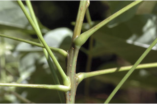
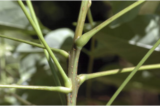
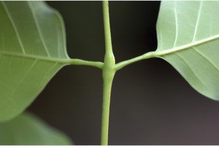
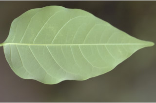
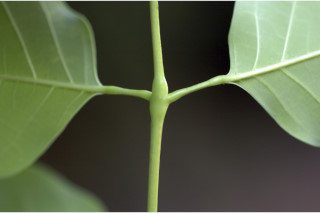
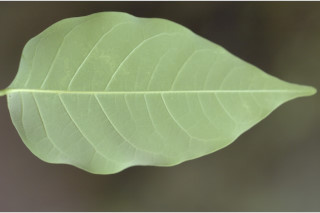
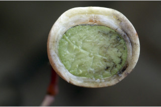
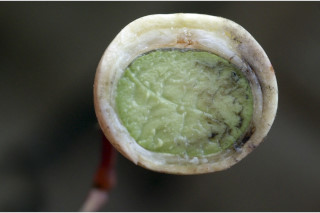

| Leaves : | Leaves compound , imparipinnate , alternate , spiral , to 35 cm long; rachis 7-13 cm long, pulvinate at base and inflated at junction of leaflets , glabrous ; leaflets opposite , 4-5 pairs, sometimes 6 pairs with terminal one; petiolule 0.4-1.5 cm long, canaliculate ; lamina 4.5-15 x 2-7.5 cm, lanceolate to narrow-ovate , apex acuminate , base asymmetric , margin entire , chartaceous , glaucous beneath; midrib flat or slightly raised above; secondary_nerves 7-12 pairs; tertiary_nerves broadly reticulate . |
 

 





 
